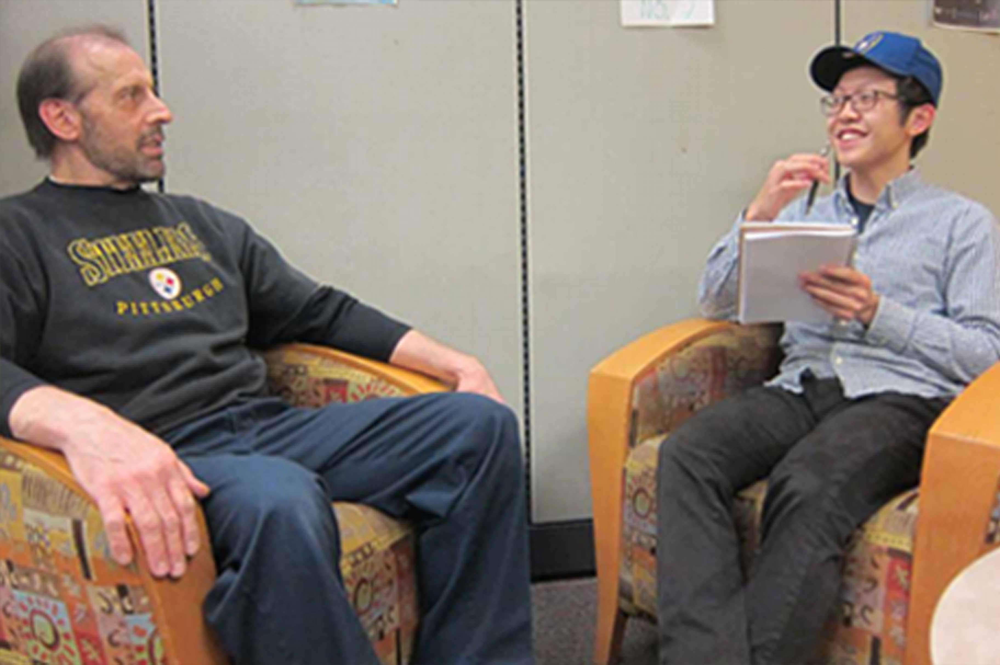
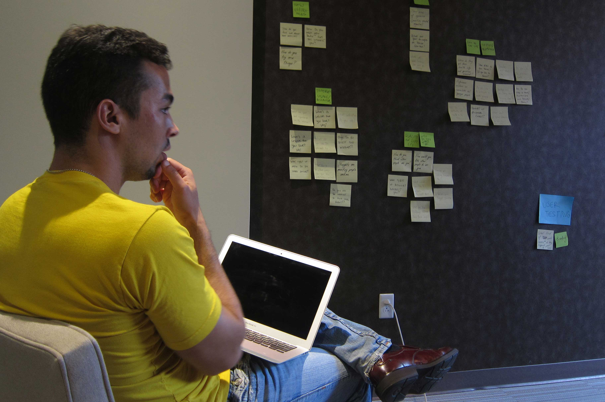
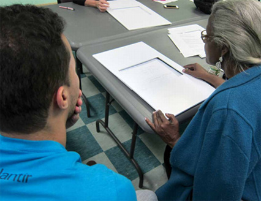
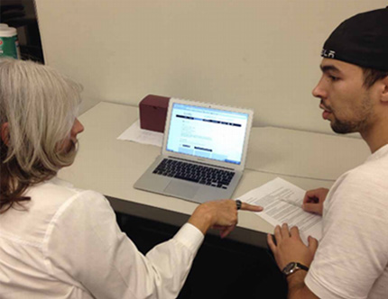
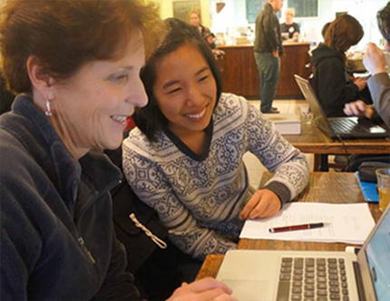
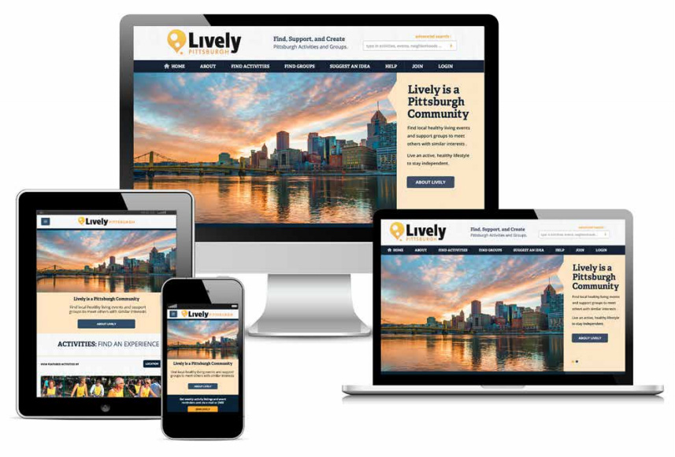

A group and event activity site designed for seniors. The site allows for activity suggestions to be up-voted and sponsors to host the suggested activities.
The old Revel website offered users the opportunity to fnd and engage in local events, search for support services and resources about healthy aging, meet people with similar interests, and use health-tracking tools. Disappointed with the old website, the CEO of Moringa Living, the creator of Revel, sought our independent study group out to recreate his website.
Before diving into redesigning the website, we conducted an extensive competitive analysis and literature review. The results from our competitive analysis are consolidated in the graph on the left - gnerally speaking, our site’s competitors are “average” in at least two of the four key categories our team deemed important: 1) homepage is welcoming and clear, 2) navigation is straightforward, 3) the site is readable, and 4) the site is easily searchable. Our literature review results were synthesized into four key insights that were used for guidance throughout our process. Due to our NDA, we cannot share these insights.
To understand our audience and their needs, we interviewed seven baby boomers, ranging in ages from 55 to 75, at their homes and at agencies they frequent. The interviews were semi-structured in that we had some prepared questions but we also left room for organic conversation. At these interviews, we wanted to delve deeper into what it is like to be a Boomer and learn more about how Revel may ft into their lives. We also conducted contextual inquiries into how the Boomers use the current Revel website and find social events to attend.
 We started our design process with low-fidelity pen and paper prototypes of our homepage. We adopted a parallel prototyping approach where each team member was responsible for creating several diferent paper prototypes for how the homepage might look. By designing the homepage, we're able to capture the key features we want and the entrance of the site.
To simulate how well our prototypes would fare in real-life, we devised two think aloud tasks for four participants to complete. The first was to fnd and join an event, and the other was to fnd and join a group. After the tasks, we interviewed them about their overall impressions of the site, the flow, and their general understanding of how the website works.
While low-fidelity prototyping, we mapped out the user flow.
We incorporated the feedback from our low-fidelity prototyping testing into our medium-fidelity prototype. The medium-fidelity prototype was created in black and white using Adobe Illustrator and InVision.
We tested our clickable, medium-fidelity prototype with four Boomers. We had a series of tasks for them to complete, including signing up for an event, joining a group, and messaging an event creator.
 A fully responsive website and online community that enables boomers to fnd and engage in opportunities that fulfll their interests. Boomers can find and join events and groups related to their interests as well as make suggestions for future events that are upvoted by the community.
